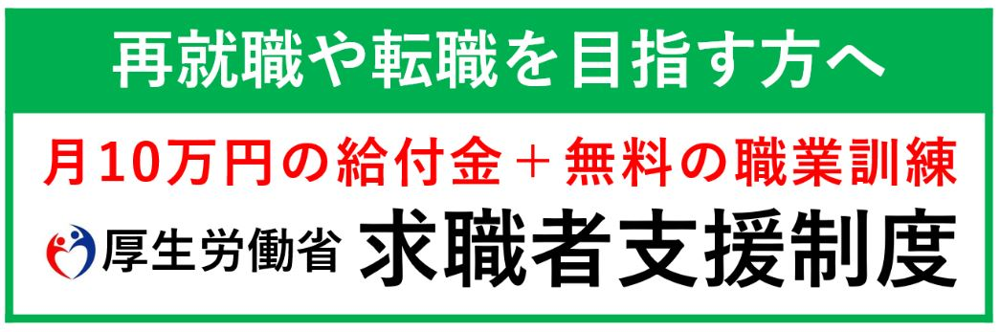

コース紹介
Curriculum
業界のプロフェッショナルが指導。
基礎から学ぶことができます。
北関東学院は、北海道から委託を受けて職業訓練を開講しております｡ WEB制作者やWEBデザイナー志望の方に必要なスキルを しっかり学べる環境をご準備しております。

WEBデザインクリエーター科
WEB Design Creator Course
WEB制作に必要なスキルを学べる講座です。 未経験者から中級スキルを持った方までを対象としていますので、 初心者の方でも安心して学ぶことができます。 講座終了後には一人でWEBサイトを作成できる力がつくよう、 講師陣がサポートします。

WEBプログラミングデザイン科
WEB Programming Design Course
現代のウェブ業界で求められるスキルを習得します。 プログラミングの基礎から最新のデザイン技術まで、 専門家による指導のもと、実践的なカリキュラムを通じて成果物を制作。 デザイン思考とテクニカルスキルを融合させた総合的な能力を身につけ、 デジタル時代のフロントエンドエキスパートとしての第一歩を踏み出しましょう。

WEBフロントエンド構築科
WEB Front-End Course
フロントエンド業務に必要なスキルを学べる講座です。 ウェブサイトやアプリの「見た目」をデザイン・構築する フロントエンド技術を学びます。 HTML, CSS, JavaScriptを始め、 レスポンシブデザインや最新のフレームワークにも触れるカリキュラム。 経験豊富な講師陣が、現場での実務技術を伝授。 即戦力として活躍できるスキルを習得できます。
卒業生の声
Voices
学びとキャリアの交差点
継続と努力の成果
北関東学院の卒業生たちが新しい職場で感じる、 訓練校での学びの価値。 彼らの声から、実際の現場での学びの影響を知ることができます。
お申し込みについて
Apply
訓練の申し込みに関する詳細や手続きについての疑問、不明点がございましたら、 お気軽にお問い合わせください。みなさまの熱意を心より歓迎いたします。
